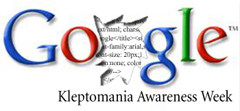

Google, den deugniet
vrijdag 25 april 2003 | Nerdisme
Toen ik vandaag mijn bookmark-Augiasstal uitmestte, merkte ik dat er her en der heel wat Google-related links tussen zaten. Ik heb ze er allemaal uitgezwierd en hier maar gedumpt. Misschien zit er eentje tussen die je nog niet eerder had gezien…
- “the best search engine” & “the worst search engine”.
- Google even handig als gevaarlijk
- Google Watch
- Google Weblog
- Google parodieën
- Building a better query
- Google Dance Tool
- Google Hacks
- Pigeonranking
- Google Services & Tools
- LVBlog: Koninginnedag
- The Anatomy of a Large-Scale Hypertextual Web Search Engine
- Using google to hack, crack, and just plain find what you need!
- Google is niet blij met werkwoordvorming merknaam
- Rejected Google holiday logos
